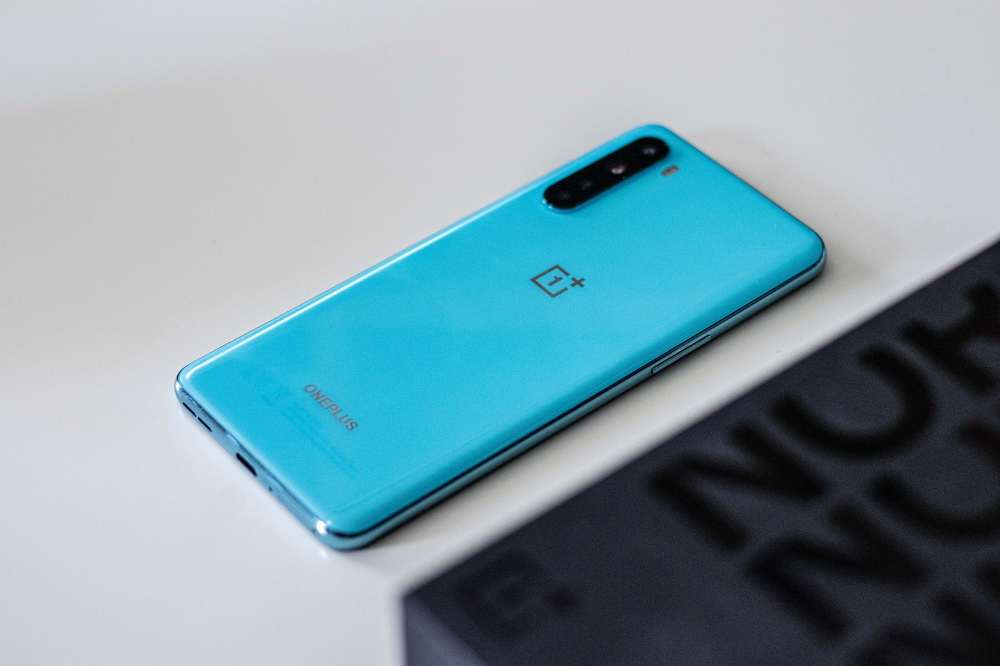
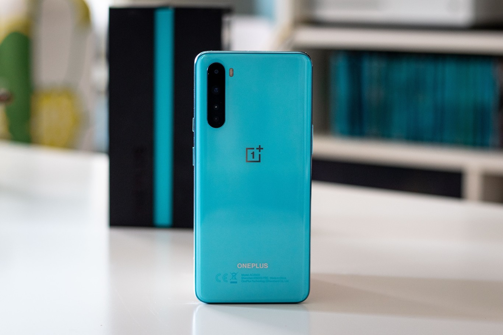
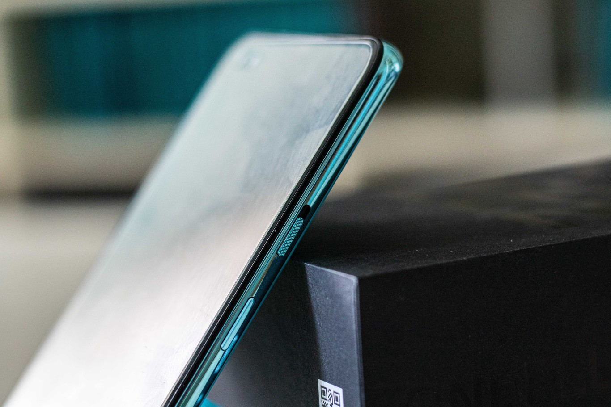
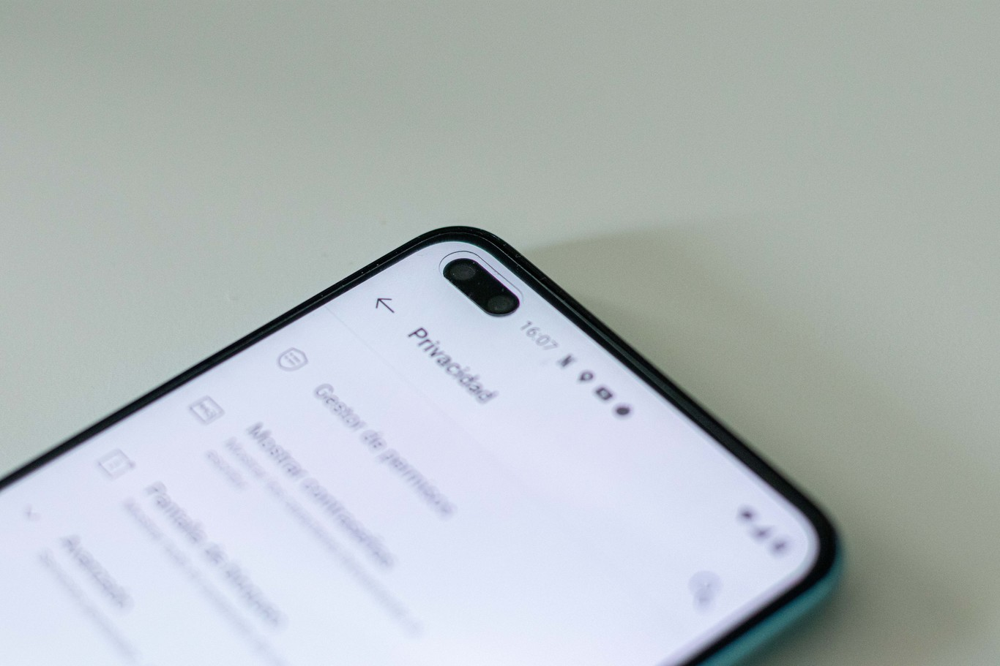
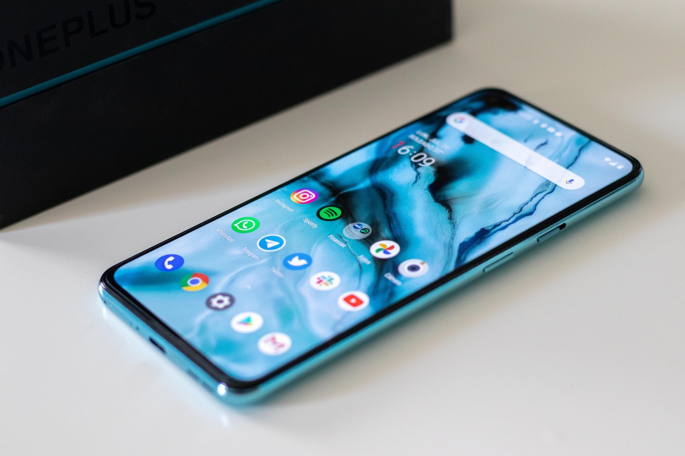
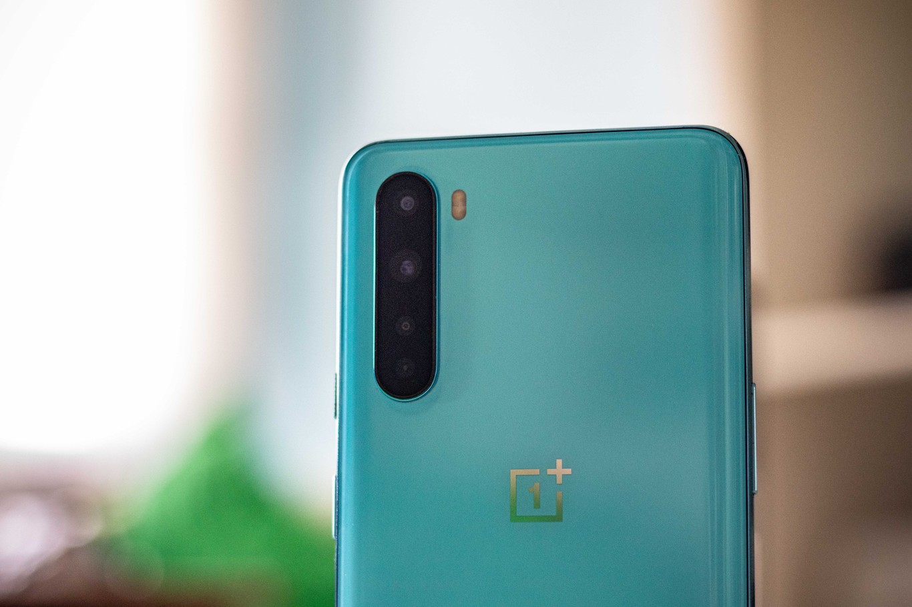
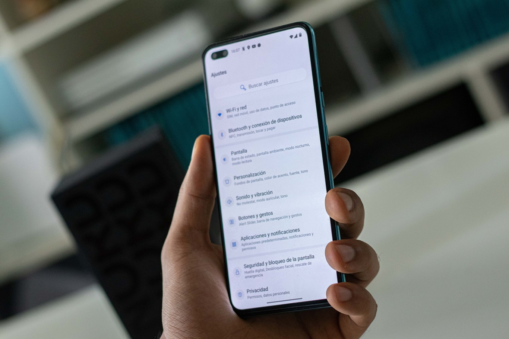

OnePlus Nord, primeras impresiones: un prometedor gama media con espíritu de OnePlus 8
Tras generaciones subiendo el precio para ubicarse de tú a tú en el catálogo de la gama alta, OnePlus ha decidido volver a los terminales económicos. Nos contaba la compañía que "es el momento adecuado para lanzar un teléfono asequible", y este es nada más y nada menos que el OnePlus Nord. El Nord es hermano de las propuestas de gama alta más caras de la marca, compartiendo algunas de sus características y recortando en otros puntos para rebajar su precio.
Vamos a darte nuestras primeras impresiones sobre este nuevo OnePlus Nord, que apuesta por una tasa de refresco de 90Hz, buena parte del sistema de cámaras del OnePlus 8 y, como es marca de la casa, OyxgenOS, una de las ROMs más "limpias" y fluidas del momento.
OnePlus se resiste a seguir la corriente de diseño
2020 está siendo un año en el que los grandes módulos cuadrados de cámara son protagonistas. Con el OnePlus Nord la compañía apuesta por una línea de diseño similar a la de sus hermanos mayores, los OnePlus 8 y 8 Pro. Esto se traduce en que la cámara está ubicada en una tradicional franja vertical, desplazada en este caso a la izquierda del terminal, en lugar de en el centro.
Los materiales de construcción son el cristal y el plástico, en un llamativo color azul claro en el caso de nuestra unidad. Para que nos hagamos una idea, es un par de tonos más azulado que sus hermanos mayores en el acabado 'Glacial Green', los cuales son más azules que verdes. Aquí hemos de destacar que la sensación en mano es la de un terminal bastante más caro. A pesar de que hay terminales de cristal en este rango de precio, no todos tienen ni la misma calidad en el propio cristal ni el mimo en calidad de construcción de este OnePlus. Respecto a los marcos de plástico, están recubiertos de una pintura que los hace parecer de metal y, al ser tan alta la calidad del cristal, la sensación que queda en mano es muy premium.
Al ser un terminal relativamente pequeño (por debajo de los 16 centímetros), es muy cómodo en mano. Acompaña también su peso, de tan solo 184 gramos. El OnePlus Nord nos devuelve a esa sensación de "móvil de gama alta compacto" que tanto añoramos algunos usuarios, aunque no se ubique como tal dentro de dicha gama.
Pero no es oro todo lo que reluce con el Nord. Si bien la calidad de construcción es prácticamente la misma respecto a sus hermanos mayores y, tras darle la vuelta, vemos que el aprovechamiento frontal es excelente, la doble cámara perforada rompe un poco el diseño tan cuidado de esta propuesta. Aunque hemos usado poco el terminal, no es fácil olvidarse de que tenemos "esa mancha negra" en la esquina. Es cierto que es más pequeña que un notch pero, al no estar centrada en la pantalla, distrae bastante.
Hablando de la pantalla, el OnePlus Nord tiene un panel de 6,44 pulgadas con tecnología AMOLED, relación de aspecto 20:9, resolución FullHD+ y una tasa de refresco de 90Hz. Está recubierta por Gorilla Glass 5 y en estas primeras impresiones no tenemos muchas pegas que sacarle. La interpretación del color parece correcta (algo saturada), la nitidez sobrada y el brillo parece el único punto que queda algo por debajo de lo esperado, aunque ya hablaremos de ello en nuestro análisis en profundidad.
No hay máxima potencia pero, ¿realmente hace falta?
Apostar por el Snapdragon 865, entre otros motivos, ha propiciado que los precios se disparen este año. El Snapdragon 765G es una propuesta de gama media con la misma o superior potencia de gamas altas de hace un par de años, lo que está permitiendo a los móviles "económicos" de 2020 ser más solventes que nunca. Este OnePlus Nord apuesta por dicho Snapdragon 765G y, en el caso de nuestra unidad, tiene 12 GB de RAM LPDDR4 y 256 GB de memoria interna UFS 2.1. Si no queremos tamaña cifra de memorias, podemos apostar por la memoria base, de 8 + 128 GB.
Aunque hablaremos sobre el rendimiento del OnePlus Nord a fondo en el correspondiente análisis, nuestras primeras impresiones dejan claro que la fluidez va a ser el principal punto fuerte del Nord. El procesador es potente, OxygenOS está muy bien optimizado (incluso siendo un software al que le quedan varias actualizaciones por delante) y los 90Hz ayudan a que la experiencia de uso se acerque más a la de un gama alta que a la de un gama media.
Sobre el software profundizaremos en la review, pero nos encontramos ante lo mismo que ya vimos en los OnePlus 8. Android 10 más personalizable que nunca, pero respetando las líneas de diseño que marca Google. OnePlus además ha dotado al Nord de aplicaciones predeterminadas de Google como la de llamadas o mensajes de Google, sustituyendo las suyas propias.
La cámara la repasaremos a fondo en el análisis, pero ya adelantamos que la experiencia recuerda al OnePlus 8. Tenemos el mismo sensor principal de 48 megapíxeles, aunque el gran angular queda recortado de los 16 megapíxeles del OnePlus 8 a 8 megapíxeles. Tenemos también un macro y un sensor de profundidad, de dos y cinco megapíxeles respectivamente. Respecto a la cámara frontal, tenemos un sensor principal de 32 megapíxeles y un sensor ultra gran angular de 8 megapíxeles.
OnePlus quiere "recuperar el norte" y esta es su arma para hacerlo
Si el OnePlus Nord es o no suficiente para que OnePlus vuelva a ocupar su sitio en lo que a relación calidad-precio se refiere lo veremos en el correspondiente análisis, pero ya podemos adelantar que el OnePlus Nord es un soplo de aire fresco en su catálogo.
Acabado prácticamente idéntico al de un OnePlus 8, procesador potente de Qualcomm, conectividad 5G, pantalla AMOLED de 90Hz, un tamaño compacto, etc. La fórmula pinta a éxito, así que quedará por ver si estas impresiones se mantienen a lo largo de estos días. Si la autonomía y la cámara cumplen, estamos ante un firme candidato a mejor gama media de este 2020.